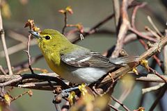
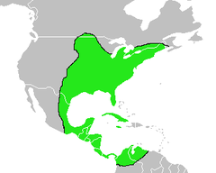
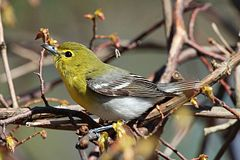
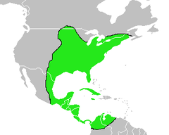

| Yellow-throated Vireo | |
|---|---|
|  | |
| Conservation status | |
| Binomial name | |
| Vireo flavifrons (Vieillot, 1808) |
|
|  | |
| Range |
| Yellow-throated Vireo | |
|---|---|
|  | |
| Conservation status | |
| Binomial name | |
| Vireo flavifrons (Vieillot, 1808) |
|
|  | |
| Range |
The Yellow-throated Vireo, Vireo flavifrons, is a small American songbird.
Adults are mainly olive on the head and upperparts with a yellow throat and white belly; they have dark eyes with yellow "spectacles". The tail and wings are dark with white wing bars. They have thick blue-grey legs and a stout bill.
Their breeding habitat is open deciduous woods in southern Canada and the eastern United States.
These birds migrate to the deep southern United States, Mexico and Central America. They are very rare vagrants to western Europe. There is one record from Britain in Kenidjack Valley Cornwall September 20th-27th 1990. There is also a sight report from Germany[citation needed].
They forage for insects high in trees. They also eat berries, especially before migration and in winter when they are occasionally seen feeding on Gumbo-limbo (Bursera simaruba) fruit.[1] They make a thick cup nest attached to a fork in a tree branch.

{kind=link}
{kind=link}